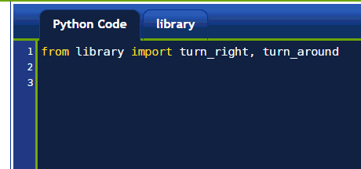

Warning
This document is in the middle of a major revision. Some sections might be missing text, or have French text as placeholder.
프로그램에 함수를 재정의해서 프로그램을 작성하기보다, 다른 프로그램에 있는 함수를 사용할 때, 라이브러리(library) 라는 특별한 프로그램에 함수를 넣고, 라이브러리에 있는 함수를 다른 프로그램이 사용할 수 있도록 하는 방법을 제공한다.
turn_right() 함수를 매번 다시 작성하는 대신에 엄청! 많이 사용할 것이다.
library 탭을 클릭하고 그곳에 함수 작성을 권장한다. turn_right() 함수도
그곳에 작성해야 된다.
그리고 나서, 라이브러리에 정의된 함수를 사용하고자 할때,
단순히 파이썬 코드 편집기에서 한줄로
from library import (함수명을 콤마로 구분해서 쭉 적는다) 타이핑한다.
library 는 library 탭에 존재하는 코드를 나타내는 명칭이다.
다른 곳에서 보듯이, 파이썬은 사용할 코드를 포함한 라이브러리를 다른 명칭으로 제공한다.

이 지점부터, 마치 파이썬 코드 편집기에서 정의한 것처럼,
turn_right() 와 turn_around() 함수를 사용할 수 있다.
from 없는 import¶특정 함수를 가져오는 대신에, 단순히 함수명을 가져오기 할 수 있다:
import library
그리고 나서, 라이브러리에서 함수를 사용하려면,
함수명 앞에 다음과 같이 library. 만 추가하면 된다:
library.turn_right()
동일한 명칭(하지만, 다른 의미)을 갖는 함수를 다수 라이브러리로 작업한다면 유용한 기능이다: 함수명 앞에 라이브러리 명칭을 추가함으로써, 어떤 함수가 호출되는지 정확하게 확인할 수 있다.
as¶가끔, 함수에 다른 명칭을 사용하는 것이 유용할 수 있다 -
최초 명칭이 너무 길거나, 동일 명칭을 갖는 다른 함수를 이미 사용하기 때문에 그렇다.
이런 상황에서, 키워드 as 를 사용할 수 있다:
from library import turn_right as right
right() # use it
turn_right() # not defined!!!!
매우 가끔, 또다른 파이썬 라이브러리가 너무나 많은 함수를 포함하지만, 함수명을 모두 적는 것이 매우 귀찮고 (기억하기 어려운) 경우가 있다:
from python_library import function1, function2, function3, ...
하지만, 모든 단일 함수 앞에 python_library. 를 사용하고 싶지는 않다.
이런 상황에서, 다음 구문을 사용할 수 있다:
from python_library import *
* 기호는 “모든 것” 을 의미하는 축약어로, 와일드카드 문자다.
예제로 다음과 같이 시도해볼 수 있다:
from reeborg_fr import *
만약 상기 명령어를 시도하게 되면, 리보그가 알고 있는 프랑스어로 된 모든 명령어를 가져온다.
따라서, 영어로 move(), 불어로 avance() 명령어를 작성하면,
리보그가 전방으로 이동한다.